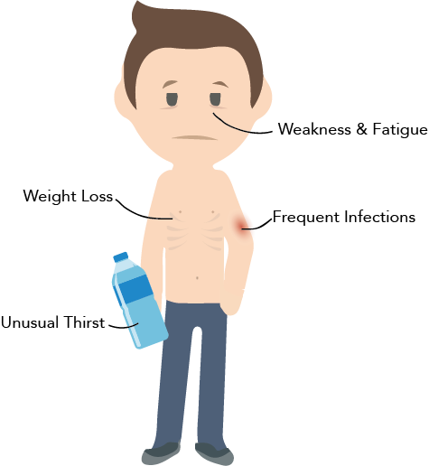
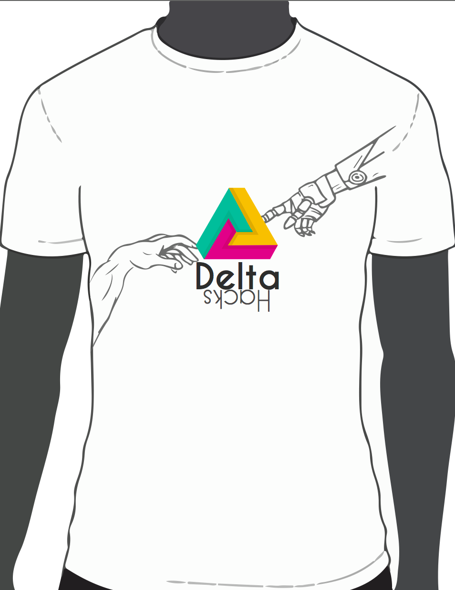
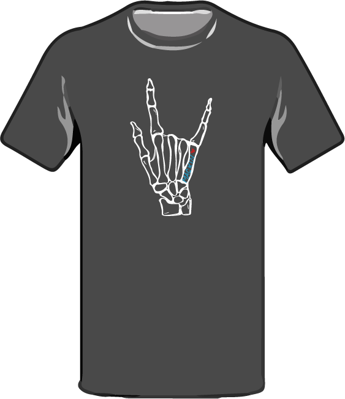
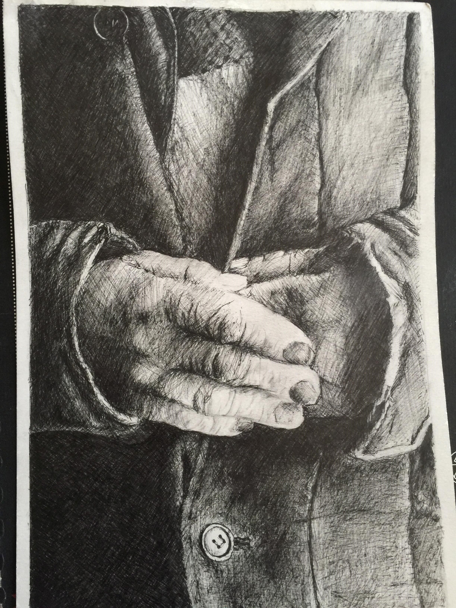
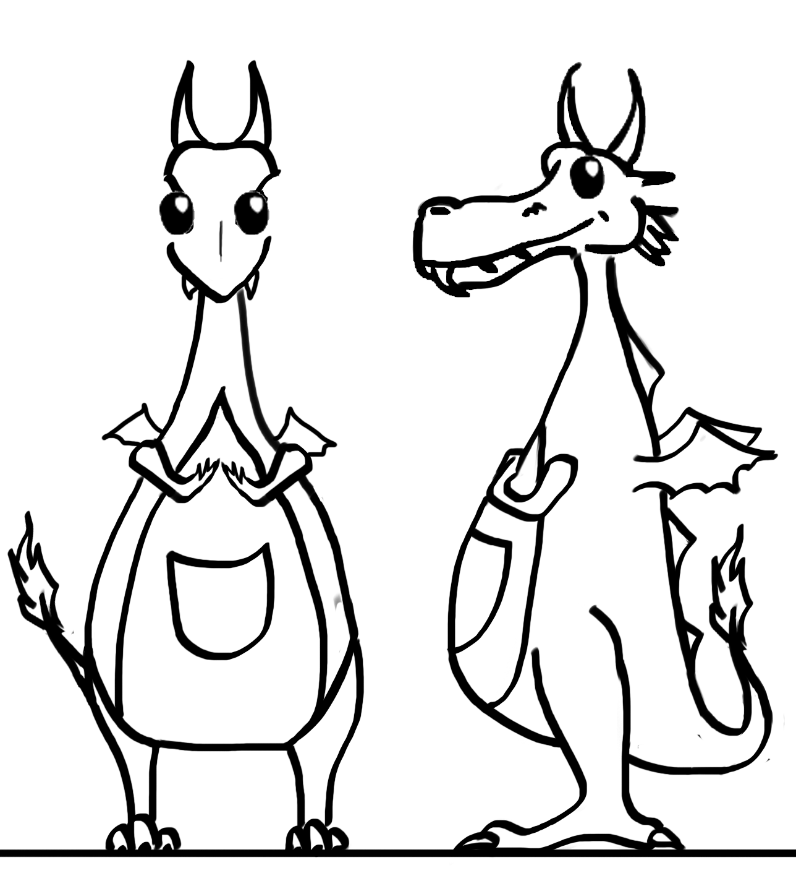
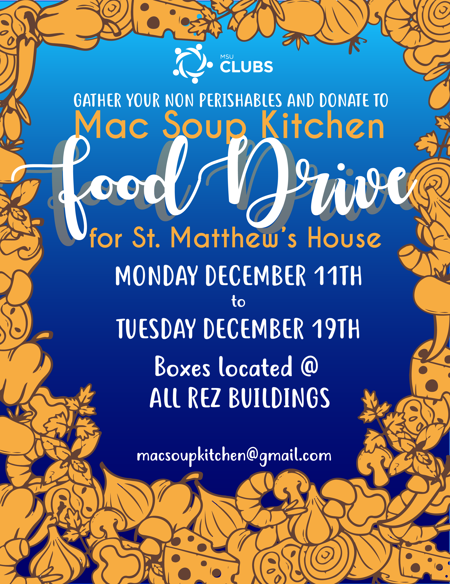
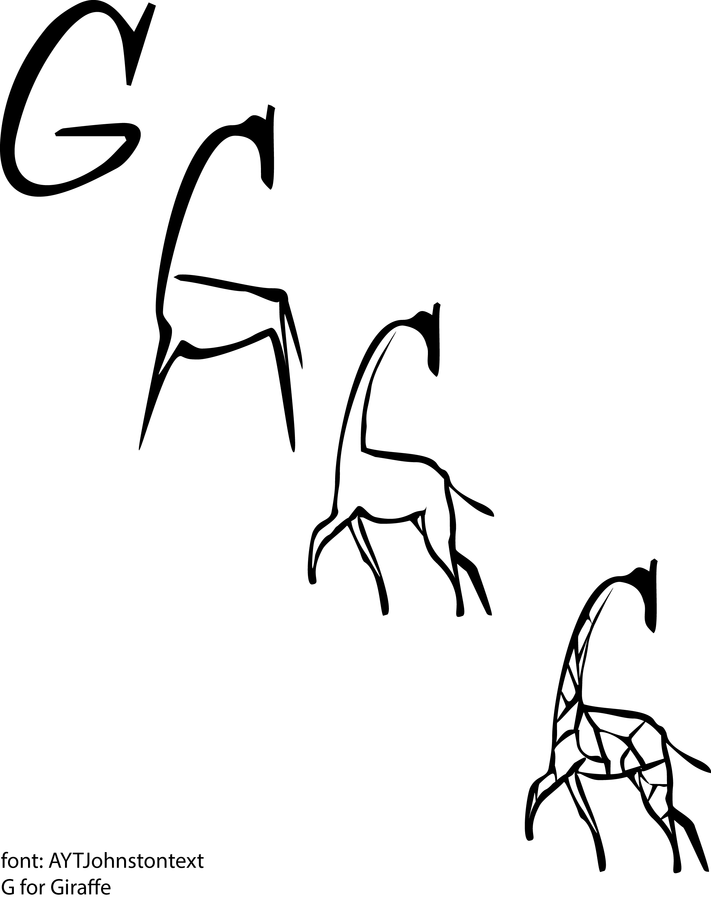
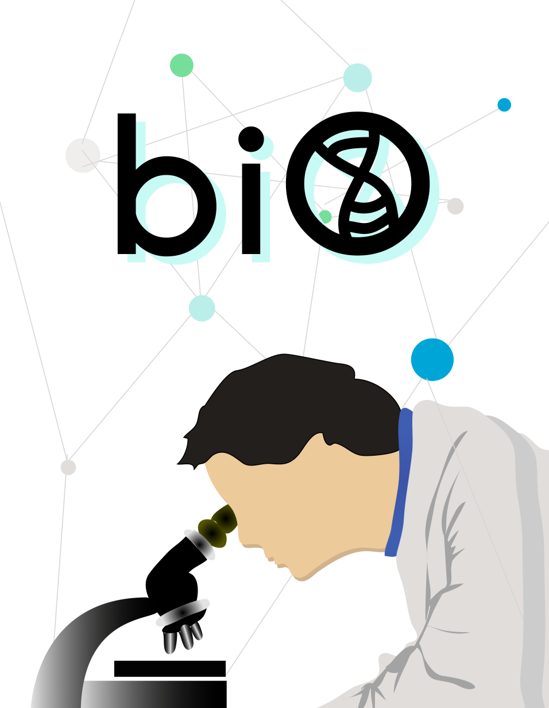

RESUME
EDUCATION
McMaster University, Honours Kinesiology
September. 2016 - To Present
(To be completed in 2020)
AWARDS & CERTIFICATES
HOSA Canada Nursing Bronze
(2015)
HOSA Canada Sports Medicine
(2017)
Standard First Aid & CPR-C
(2017)
Clinical Good Practice - Student
(2017)
SKILLS
• Adobe Illustrator
• Adobe Photoshop
• Microsoft Office
• Windows
• MacOS
• Linux
• Able to multitask
• Detail oriented
• Works well in teams
• Organized
• Adaptable
• Responsible & Trustworthy
WORK EXPERIENCE
Receptionist
August 2017 - Present
Sheppard Dental | North York, Ontario.
• Greeted and created a comfortable environment for customers.
• Organized and updated patient records and scheduled appointments using a computerized system.
• Recorded and inputed spendings on a spreadsheet.
• Handled payment and insurance forms.
• General administration tasks.
Barista
August 2015 - April 2016
Michael-Angelo's | Markham, Ontario.
• Prepared various drinks according to customer's needs and served gelato.
• Assitsed customers with pastries according to their needs.
• Maintained the cleanliness of the cafe and restock needed items.
• Handled cash carefully and responsibly.
Dog Daycare and Grooming Assistant
January 2016 - June 2016
Dog Village | Markham, Ontario.
• Supervised and kepy dogs active and stimulated.
• Maintained cleanliness of daycare.
• Bathed dogs and assist with grooming.
• Trained and fed dogs according to their owner's accomodation.
VOLUNTEER EXPERIENCE
HOSA McMaster Veterinary Science Training Officer
June 2017 - Present
McMaster University | Hamilton, Ontario
• Developed a written and practical mock exam to prepare students for the annual Spring Leadership Conference.
• Responsible for developing and delivering weekly lesson plans to train students in assigned event.
• Attended executive meetings to keep up with club functions.
• Assist with fundraising and promotional events.
Cat Adoption Volunteer
October 2016 - Present
Hamilton Burlington SPCA | Hamilton, Ontario.
• Socialized and engaged with cars and kittens.
• Facilitated and processed adoption of cats and kittens.
• Answered customers' questions regarding the adoption process and specific questions about the cats and kittens.
Aviary Volunteer
October 2016 - Present
Friends of the Aviary | Hamilton, Ontario.
• Clean the living environment of various species of birds
• Prepared food for the birds according to diet plan
• Interacted with birds and socialized them
Steam Cell Drive Volunteer
October 2016 - Present
One Match | Hamilton, Ontario.
• Informed potential donors about the process of joining stem cell bank and the process of donating stem cells and answered all inquiries
• Assisted with the registration process to become a donor.
Animal Clinic Volunteer
June 2017 - September 2017
Dufferin-Steeles Animal Clinic | Vaughn, Ontario.
• Observed and assisted in routine checkups and medical procedures
• Maintenance of clinic and enhance client experience
Summer Student Volunteer
August 2014 - August 2016
Markham Stouffville Hospital | Markham, Ontario.
• Assisted patients with CT scanning procedure
• Surveyed emergency patients about their experience with the hospital, staff, and their operation
• Promoted hand hygiene as a part of a hospital program
Summer Student Volunteer
August 2015
Holland Bloorview Kids Rehabilitation Hospital | Toronto, Ontario.
• Assisted children in the art activity asreas in order to keep them involved.
• Worked with childdren with and without disabilities in a self-directed environment.
• Planned the curriculum for each day to keep the children focused and actively engaged.
PORTFOLIO







